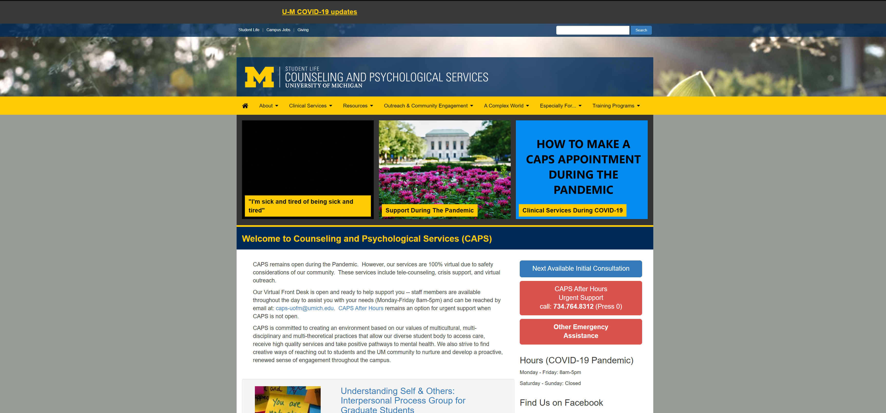
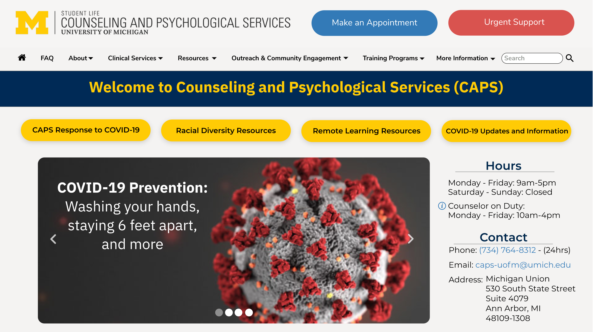

-
Overview
-
CAPS nurtures the psychological development and emotional well-being of students through counseling, therapy, preventative and educational programming, outreach and consultation. The CAPS website redesign was initiated at the start of the COVID-19 pandemic, when the challenge to transition what are traditionally face-to-face services to an online format was met with a marked increase in need for psychological support services; students faced academic disruption, social isolation, dislocation, loss, and fear about health and the future.
-
For our ITS Summer 2020 Internship cohort project (all virtual), our 5 person team independently conceived of, pitched, and executed a redesign of the CAPS website with the goal of making it easier, quicker and less stressful for our already highly distressed peers to identify what services CAPS could offer and to navigate access to those resources. We realized we all had experience with peers sharing frustration about securing mental health services when needed. In addition, we noticed a number of issues and points of confusion with the existing CAPS website. CAPS encouraged and supported our efforts. Our team was the only Intern cohort to tackle a project outside of ITS.
-
To improve the potential of the website to serve the needs and enhance the emotional well being of students, we recreated the website from the ground up (e.g., consolidating redundant information, assessing which pages were visited most and then making it easier to get to those pages, and making sure students could access emergency services no matter which page they were on). We focused on feedback which was deemed the most important by user research conducted with students, and by members of the CAPS staff whom we interviewed. My primary roles in the project included being the Project Manager (using Agile development practices) and UX Researcher/Designer.
- CAPS website redesign mockup
-

CAPS website, pre-redesign
-

CAPS website, post-redesign
-
This pre-post website redesign of the CAPS Homepage illustrates one of the primary design goals of our project: to help stressed, distressed, and overwhelmed students access mental health services more quickly and easily. We placed the “Make an Appointment” and “Urgent Support” buttons on the top of every page, each with a more prominent, distinct shape, which the user's eye is immediately drawn to, without interference from any other elements on the Home and Secondary pages.
Outcome
Created a Website Redesign prototype of the CAPS website, to increase ease of use/accessibility to mental health resources.
Client
The University of Michigan's Counseling and Psychological Services
Type
UX Research, UX Design, Product Consultation
Date
July - August 2020
Roles
UX Researcher, UX Designer, Project Manager
-
Stakeholder and Client Consultation
-
At the start of the poject, my team members and I consulted with CAPS staff to understand why current website decisions were made, and to focus the project scope given the tight time constraints of the internship.
-
User Research (Existing Website)
-
We conducted qualitative and quantitative user research, with 16 undergraduates at the University of Michigan. During interviews, user subjects performed tasks we presented to them, to help identifying pain points that occurred when using the website. Tasks and questions asked included:
-
"Walk us through scheduling a psychotherapy appointment?"
-
"Show us how you would access emergency mental health services?"
-
"How easy/stressful was that task for you?"
-
-
Free response questions were asked to better understand the needs users have for the website. Questions included:
-
"During this time of uncertainty, what services/resources would you like to see on the website that you do not see now?"
-
-
We conducted user testing to identify how easy it was for students to use services from the CAPS homepage, as well as identify which highly used and desired services offered (and desired) are not presented on the homepage. Finally, though observations of user subjects, and an evalutaion of the website, we identified problems with site pages such as: broken links, incorrect information, differing hours of operations listed on different pages and unhelpful information redundancy. After all of our data was collected, we analyzed it in total, to extract key findings.
-
Key Research Findings (Existing Website)
-
We found that many students felt the homepage was too busy, with the layout obscuring the most crucial services and information, which resulted in frustration when users tried to look for such information.